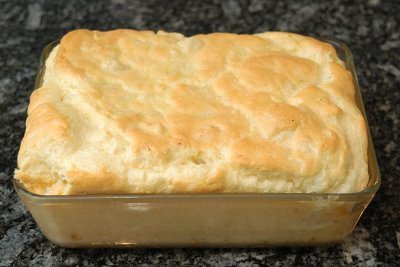

| Zutaten für 4 Personen: | |
| 750 g | Blumenkohl |
| 20 g | Mehl |
| 30 g | Butter oder Margarine |
| 1 dl | Milch |
| 3 | Eier |
| Salz, Muskat | |
Auflaufform 2 l
Ofen auf Mittelhitze (180°C) vorheizen.
Blumenkohl rüsten, waschen und in kleine Röschen aufteilen.
In kochendem Salzwasser knapp garkochen, etwa 10 Minuten.
Das Wasser abgiessen, 2 dl aufbewahren.
Das Mehl in der Butter dämpfen, mit der Milch und dem Blumenkohl-Kochwasser ablöschen, glatt rühren und würzen. Von der Hitze nehmen.
Eier teilen. Eigelb und Blumenkohl mit der Sauce mischen und abkühlen lassen.
Eiweiss zu Schnee schlagen. Sorgfältig unter die Masse ziehen und die Auflaufform einfüllen.
Während 50 - 60 Minuten backen. Sofort servieren.
Herbert Eigenmann, Code: KOA
Getestet am 12.3.96 von RE: Akzeptabel. Eventuell ein Versuch mit richtiger Béchamel Sauce machen. Getestet mit Brokkoli da Blumenkohl nicht erhältlich war.
Das kommt eher wie ein Blumenkohl-Soufflee daher. Essbar, schmeckt aber stark nach Blumenkohl. Ist wohl schon richtig so aber da das nicht so mein Lieblingsgemüse ist gibt es 3 Sterne. RE 20.2.2010